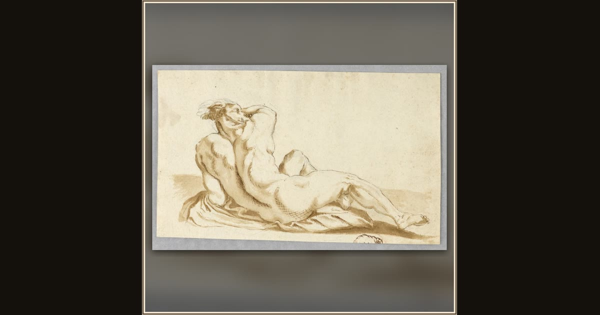

Companion of Ulysses Transforming into a Hog
Unknown Italian artist · c. 1650 · Cooper Hewitt, Smithsonian Design Museum · New York, USA
Snout first! In this old Italian drawing, one of Ulysses' sailors is caught mid-spell — half sailor, half pig, and very surprised. Explore its place in Book X of the Odyssey.